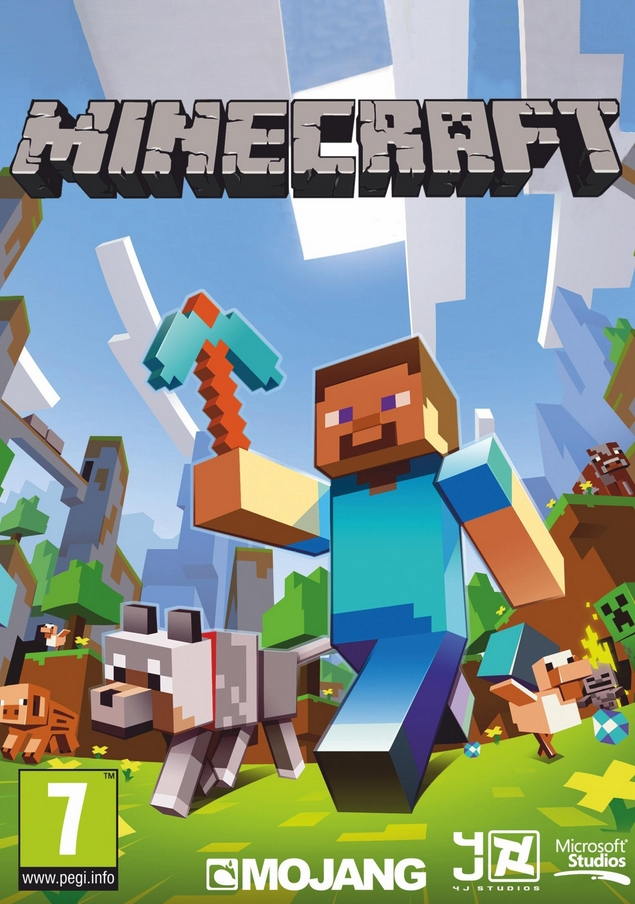
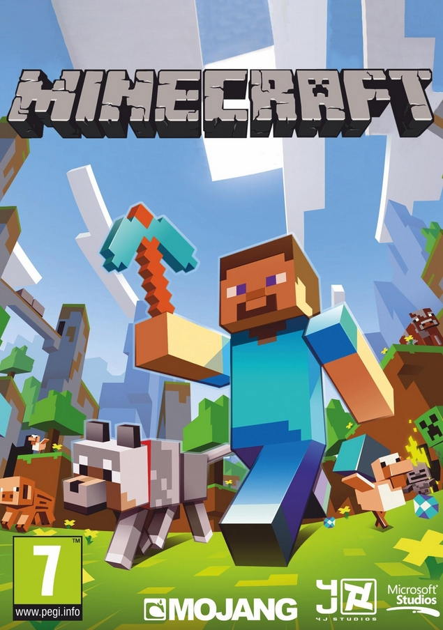

DATA AND RESEARCH
Modding in Learning
In a study of different game design classes, researchers from Penn State found that classes built upon modding rather than building games from the ground up resulted in students better understanding game design concepts such as balance, design, and space. They found that by using modding in their curriculum, educators were able to help students better visualize and apply concepts discussed in class. Additionally, freelance modding is beneficial in learning game design as well. Many modders tell stories of landing jobs at the companies that made the games being modded.
Modding Affecting Sales
In a study of the effect of video game modding communities on sales, University of Haifa’s Leo Poretski and Ofer Arazy discovered that games with communities oriented toward modding tended to sell more copies and last longer in a statistically significant manner. They also found that developers who actively attempted to nurture these communities, for example by creating developer and creation kits for their games, tended to outperform even the other games with healthy modding communities as well. For example, they found that Portal 2, a puzzle game created by Valve, had its player base multiply 20 fold after the release of its creation tools. Same with Minecraft, still boasting a massive player base and modding community 10 years after release.
 
